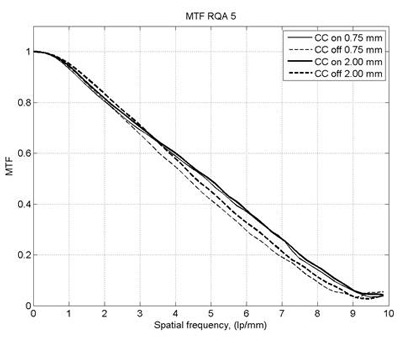
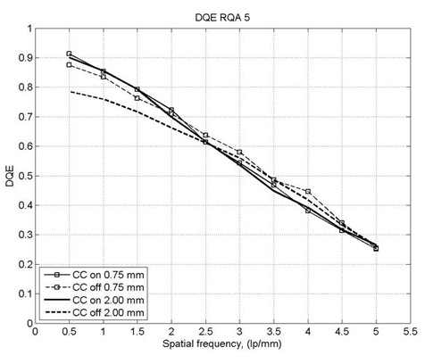

XC-Flite FX2
Technology
The XC-FLITE FX2 is a Dual Energy photon-counting, direct conversion, x-ray sensor for digital x-ray imaging that employs two FLITE boards to create a fixed linear detector that is 300mm wide and either 25.6, 12.8mm or 6.4mm deep. Employing the very high efficiency CdTe-CMOS sensor technology the detector provides outstanding image quality and is designed to be operated in frame or Time Delayed Summation (TDS) mode.
The XC-FLITE FX2 has the additional benefit of Dual Energy acquisition with anti-coincidence technology. During dual energy acquisition the energy of the detected photon is compared to two independent thresholds that are read out separately. The two energy sets can be used for material separation, opening the door to new imaging techniques in both medical and industrial x-ray. Anti-coincidence technology allows superior MTF through attributing single photon signal to the correct pixel.
Application
XC-Flite FX2 has the direct conversion CMOS technology at its heart giving a fixed detector solution with the highest levels of resolution, sensitivity and performance that is suitable for a broad range of applications including Scientific and Dental imaging.
Integration
XC-FLITE FX2 sensor is connected to the computer via a GigE interface. The detector comes with a fully flexible software development kit which runs on Windows XP, Vista and Windows 7. The detector is bundled with engineering software which exposes the various functionalities available.
Resolution and dqe for anti-coincidence (cc) on and off
 
Physical
| Dimensions lxwxh | 386 x 131 x 65 mm |
| Temperature control | Internal Peltier temperature control |
| Ambient temperature range | +10 - +30°C @ 85% humidity |
| Storage temperature range | -10 - +60°C @ 10% to 95% humidity |
| X-ray window | Carbon fiber, 500µm thick |
| X-ray shielding | Depending on application |
Sensor
| Sensor type | Dual-Energy Photon Counting CdTe-CMOS |
| Sensor thickness | 0.75mm – 2.0mm CdTe |
| Active area | 2 boards of 154.7 x 12.8 mm2 (3072 x 128 pixels approx 1 pixel tile gap) |
| Pixel size | 100 um |
| Pixel fill factor | 100% |
Performance
| Frame rate | up to 1000 fps native: 150mmx150mm area in ~1s |
| Counter dynamic range | 12 bits |
| Image binning | 2 x 2 |
| Acquisition time | 100 µs - 1 min+ |
| DQE(0) | 85% @ RQA5 spectra |
| MTF | > 80% @ 2 lp/mm > 45% @ 5 lp/mm |
| Tube kV range | 15 - 250 |
| External trigger available output | 3.3V TTL |
| Input | 3 - 15 V |
| Lag | <0.1% (after X-ray12uGy) |
| Ghosting | <0.1% 1 min after x-rays (12uGy) |